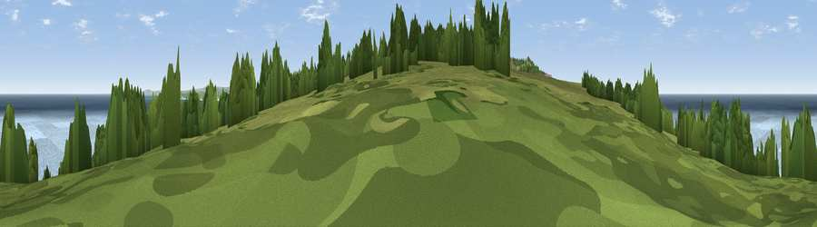

Viewpoint near St Ives
#23677 in England · top 65% of its area beats it · near St IvesWhere it is
The exact computed spot (SW 50375 40925). Click the marker for map links.
The view, rendered

A 360° render of this exact spot computed from the terrain model, tree cover and land cover — summer colours, afternoon light, calibrated against photographs of famous viewpoints. Real trees, hedges and buildings will differ in detail.
The panorama
Grey silhouette: terrain skyline in each direction (720 bearings, Earth curvature and refraction included). Dashed green: skyline with trees (+15 m) and buildings (+8 m) as obstacles. Blue strip: how far the ground is visible on each bearing.
Where the view opens
Wedge length = distance to the farthest visible ground on that bearing (vegetation-aware). Rings at 10, 25 and 50 km.
What fills the view
86% water · 6% woodland · 5% grassland ·
Angular shares of the visible panorama (visual magnitude), not map area. Landscape diversity 0.24 (0–1 Shannon).
Key numbers
More beautiful places nearby
The staircase of upgrades: each row has a higher view potential than everything closer. Driving times are estimates from straight-line distance, calibrated against real road routing — check an actual route before setting out.
| Place | Direction | Drive | Score |
|---|---|---|---|
| Viewpoint near Halsetown | SSE · 2 km | ~4 min | 71.8 |
| Viewpoint near Halsetown | WSW · 2 km | ~4 min | 73.7 |
| Viewpoint near Halsetown | SSW · 2 km | ~5 min | 82.0 |
| Viewpoint near Towednack | SW · 2 km | ~5 min | 84.2 |
| Rosewall Hill | SW · 2 km | ~6 min | 88.0 |
| Viewpoint near Combe Martin | NE · 153 km | ~175 min | 88.9 |
| Holdstone Hill | NE · 154 km | ~177 min | 90.2 |
| The Knoll | ENE · 208 km | ~225 min | 91.0 |
50.21554, -5.50043 · source: screening · position refined by local search. Computed location — check access rights before visiting.